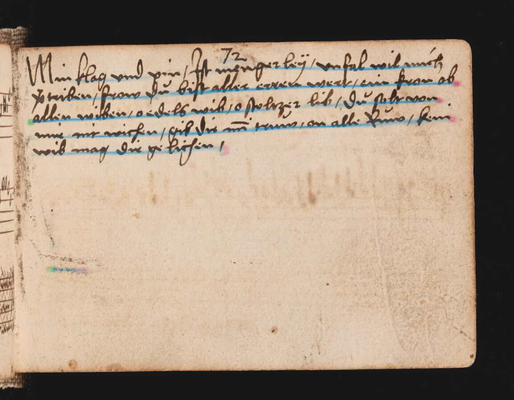

Advanced Usage¶
Optical character recognition is the serial execution of multiple steps, in the case of kraken, layout analysis/page segmentation (extracting topological text lines from an image), recognition (feeding text lines images into a classifier), and finally serialization of results into an appropriate format such as ALTO or PageXML.
Input and Outputs¶
Kraken inputs and their outputs can be defined in multiple ways. The most simple are input-output pairs, i.e. producing one output document for one input document follow the basic syntax:
$ kraken -i input_1 output_1 -i input_2 output_2 ... subcommand_1 subcommand_2 ... subcommand_n
In particular subcommands may be chained.
There are other ways to define inputs and outputs as the syntax shown above can become rather cumbersome for large amounts of files.
As such there are a couple of ways to deal with multiple files in a compact way. The first is batch processing:
$ kraken -I '*.png' -o ocr.txt segment ...
which expands the glob expression in kraken internally and appends the suffix defined with -o to each output file. An input file xyz.png will therefore produce an output file xyz.png.ocr.txt. A second way is to input multi-image files directly. These can be either in PDF, TIFF, or JPEG2000 format and are specified like:
$ kraken -I some.pdf -o ocr.txt -f pdf segment ...
This will internally extract all page images from the input PDF file and write one output file with an index (can be changed using the -p option) and the suffix defined with -o.
The -f option can not only be used to extract data from PDF/TIFF/JPEG2000 files but also various XML formats. In these cases the appropriate data is automatically selected from the inputs, image data for segmentation or line and region segmentation for recognition:
$ kraken -i alto.xml alto.ocr.txt -i page.xml page.ocr.txt -f xml ocr ...
The code is able to automatically determine if a file is in PageXML or ALTO format.
Output formats¶
All commands have a default output format such as raw text for ocr, a plain image for binarize, or a JSON definition of the the segmentation for segment. These are specific to kraken and generally not suitable for further processing by other software but a number of standardized data exchange formats can be selected. Per default ALTO, PageXML, hOCR, and abbyyXML containing additional metadata such as bounding boxes and confidences are implemented. In addition, custom jinja templates can be loaded to crate individualised output such as TEI.
Output formats are selected on the main kraken command and apply to the last subcommand defined in the subcommand chain. For example:
$ kraken --alto -i ... segment -bl
will serialize a plain segmentation in ALTO into the specified output file.
The currently available format switches are:
$ kraken -n -i ... ... # native output
$ kraken -a -i ... ... # ALTO output
$ kraken -x -i ... ... # PageXML output
$ kraken -h -i ... ... # hOCR output
$ kraken -y -i ... ... # abbyyXML output
Custom templates can be loaded with the –template option:
$ kraken --template /my/awesome/template.tmpl -i ... ...
The data objects used by the templates are considered internal to kraken and can change from time to time. The best way to get some orientation when writing a new template from scratch is to have a look at the existing templates here.
Binarization¶
Note
Binarization is deprecated and mostly not necessary anymore. It can often worsen text recognition results especially for documents with uneven lighting, faint writing, etc.
The binarization subcommand converts a color or grayscale input image into an
image containing only two color levels: white (background) and black
(foreground, i.e. text). It accepts almost the same parameters as
ocropus-nlbin. Only options not related to binarization, e.g. skew
detection are missing. In addition, error checking (image sizes, inversion
detection, grayscale enforcement) is always disabled and kraken will happily
binarize any image that is thrown at it.
Available parameters are:
option |
type |
|---|---|
–threshold |
FLOAT |
–zoom |
FLOAT |
–escale |
FLOAT |
–border |
FLOAT |
–perc |
INTEGER RANGE |
–range |
INTEGER |
–low |
INTEGER RANGE |
–high |
INTEGER RANGE |
To binarize a image:
$ kraken -i input.jpg bw.png binarize
Note
Some image formats, notably JPEG, do not support a black and white image mode. Per default the output format according to the output file name extension will be honored. If this is not possible, a warning will be printed and the output forced to PNG:
$ kraken -i input.jpg bw.jpg binarize
Binarizing [06/24/22 09:56:23] WARNING jpeg does not support 1bpp images. Forcing to png.
✓
Page Segmentation¶
The segment subcommand accesses page segmentation into lines and regions with the two layout analysis methods implemented: the trainable baseline segmenter that is capable of detecting both lines of different types and regions and a legacy non-trainable segmenter that produces bounding boxes.
Universal parameters of either segmenter are:
option |
action |
|---|---|
-d, –text-direction |
Sets principal text direction. Valid values are horizontal-lr, horizontal-rl, vertical-lr, and vertical-rl. |
-m, –mask |
Segmentation mask suppressing page areas for line detection. A simple black and white mask image where 0-valued (black) areas are ignored for segmentation purposes. |
Baseline Segmentation¶
The baseline segmenter works by applying a segmentation model on a page image which labels each pixel on the image with one or more classes with each class corresponding to a line or region of a specific type. In addition there are two auxiliary classes that are used to determine the line orientation. A simplified example of a composite image of the auxiliary classes and a single line type without regions can be seen below:
In a second step the raw heatmap is vectorized to extract line instances and region boundaries, followed by bounding polygon computation for the baselines, and text line ordering. The final output can be visualized as:

The primary determinant of segmentation quality is the segmentation model employed. There is a default model that works reasonably well on printed and handwritten material on undegraded, even writing surfaces such as paper or parchment. The output of this model consists of a single line type and a generic text region class that denotes coherent blocks of text. This model is employed automatically when the baseline segment is activated with the -bl option:
$ kraken -i input.jpg segmentation.json segment -bl
New models optimized for other kinds of documents can be trained (see here). These can be applied with the -i option of the segment subcommand:
$ kraken -i input.jpg segmentation.json segment -bl -i fancy_model.mlmodel
Legacy Box Segmentation¶
The legacy page segmentation is mostly parameterless, although a couple of switches exist to tweak it for particular inputs. Its output consists of rectangular bounding boxes in reading order and the general text direction (horizontal, i.e. LTR or RTL text in top-to-bottom reading order or vertical-ltr/rtl for vertical lines read from left-to-right or right-to-left).
Apart from the limitations of the bounding box paradigm (rotated and curved lines cannot be effectively extracted) another important drawback of the legacy segmenter is the requirement for binarized input images. It is therefore necessary to apply binarization first or supply only pre-binarized inputs.
The legacy segmenter can be applied on some input image with:
$ kraken -i 14.tif lines.json segment -x
$ cat lines.json
Available specific parameters are:
option |
action |
|---|---|
–scale FLOAT |
Estimate of the average line height on the page |
-m, –maxcolseps |
Maximum number of columns in the input document. Set to 0 for uni-column layouts. |
-b, –black-colseps / -w, –white-colseps |
Switch to black column separators. |
-r, –remove-hlines / -l, –hlines |
Disables prefiltering of small horizontal lines. Improves segmenter output on some Arabic texts. |
-p, –pad |
Adds left and right padding around lines in the output. |
Principal Text Direction¶
The principal text direction selected with the -d/–text-direction is a switch used in the reading order heuristic to determine the order of text blocks (regions) and individual lines. It roughly corresponds to the block flow direction in CSS with an additional option. Valid options consist of two parts, an initial principal line orientation (horizontal or vertical) followed by a block order (lr for left-to-right or rl for right-to-left).
The first part is usually horizontal for scripts like Latin, Arabic, or Hebrew where the lines are horizontally oriented on the page and are written/read from top to bottom:
Other scripts like Chinese can be written with vertical lines that are written/read from left to right or right to left:

The second part is dependent on a number of factors as the order in which text blocks are read is not fixed for every writing system. In mono-script texts it is usually determined by the inline text direction, i.e. Latin script texts columns are read starting with the top-left column followed by the column to its right and so on, continuing with the left-most column below if none remain to the right (inverse for right-to-left scripts like Arabic which start on the top right-most columns, continuing leftward, and returning to the right-most column just below when none remain).
In multi-script documents the order of is determined by the primary writing system employed in the document, e.g. for a modern book containing both Latin and Arabic script text it would be set to lr when Latin is primary, e.g. when the binding is on the left side of the book seen from the title cover, and vice-versa (rl if binding is on the right on the title cover). The analogue applies to text written with vertical lines.
With these explications there are four different text directions available:
Text Direction |
Examples |
|---|---|
horizontal-lr |
Latin script texts, Mixed LTR/RTL docs with principal LTR script |
horizontal-rl |
Arabic script texts, Mixed LTR/RTL docs with principal RTL script |
vertical-lr |
Vertical script texts read from left-to-right. |
vertical-rl |
Vertical script texts read from right-to-left. |
Masking¶
It is possible to keep the segmenter from finding text lines and regions on certain areas of the input image. This is done through providing a binary mask image that has the same size as the input image where blocked out regions are black and valid regions white:
$ kraken -i input.jpg segmentation.json segment -bl -m mask.png
Model Repository¶
There is a semi-curated repository of freely licensed recognition models that can be interacted with from the command line using a few subcommands.
Querying and Model Retrieval¶
The list subcommand retrieves a list of all models available and prints
them including some additional information (identifier, type, and a short
description):
$ kraken list
Retrieving model list ━━━━━━━━━━━━━━━━━━━━━━━━━━━━━━━━━━━━━━━━ 100% 8/8 0:00:00 0:00:07
10.5281/zenodo.6542744 (pytorch) - LECTAUREP Contemporary French Model (Administration)
10.5281/zenodo.5617783 (pytorch) - Cremma-Medieval Old French Model (Litterature)
10.5281/zenodo.5468665 (pytorch) - Medieval Hebrew manuscripts in Sephardi bookhand version 1.0
...
To access more detailed information the show subcommand may be used:
$ kraken show 10.5281/zenodo.5617783
name: 10.5281/zenodo.5617783
Cremma-Medieval Old French Model (Litterature)
....
scripts: Latn
alphabet: &'(),-.0123456789:;?ABCDEFGHIJKLMNOPQRSTUVXabcdefghijklmnopqrstuvwxyz¶ãíñõ÷ħĩłũƺᵉẽ’•⁊⁹ꝑꝓꝯꝰ SPACE, COMBINING ACUTE ACCENT, COMBINING TILDE, COMBINING MACRON, COMBINING ZIGZAG ABOVE, COMBINING LATIN SMALL LETTER A, COMBINING LATIN SMALL LETTER E, COMBINING LATIN SMALL LETTER I, COMBINING LATIN SMALL LETTER O, COMBINING LATIN SMALL LETTER U, COMBINING LATIN SMALL LETTER C, COMBINING LATIN SMALL LETTER R, COMBINING LATIN SMALL LETTER T, COMBINING UR ABOVE, COMBINING US ABOVE, COMBINING LATIN SMALL LETTER S, 0xe8e5, 0xf038, 0xf128
accuracy: 95.49%
license: CC-BY-SA-2.0
author(s): Pinche, Ariane
date: 2021-10-29
If a suitable model has been decided upon it can be retrieved using the get
subcommand:
$ kraken get 10.5281/zenodo.5617783
Processing ━━━━━━━━━━━━━━━━━━━━━━━━━━━━━━━━━━━━━━━━ 100% 16.1/16.1 MB 0:00:00 0:00:10
Model name: cremma_medieval_bicerin.mlmodel
Models will be placed in $XDG_BASE_DIR and can be accessed using their name as
printed in the last line of the kraken get output.
$ kraken -i ... ... ocr -m cremma_medieval_bicerin.mlmodel
Publishing¶
When one would like to share a model with the wider world (for fame and glory!) it is possible (and recommended) to upload them to repository. The process consists of 2 stages: the creation of the deposit on the Zenodo platform followed by approval of the model in the community making it discoverable for other kraken users.
For uploading model a Zenodo account and a personal access token is required. After account creation tokens can be created under the account settings:

With the token models can then be uploaded:
$ ketos publish -a $ACCESS_TOKEN aaebv2-2.mlmodel
DOI: 10.5281/zenodo.5617783
A number of important metadata will be asked for such as a short description of the model, long form description, recognized scripts, and authorship. Afterwards the model is deposited at Zenodo. This deposit is persistent, i.e. can’t be changed or deleted so it is important to make sure that all the information is correct. Each deposit also has a unique persistent identifier, a DOI, that can be used to refer to it, e.g. in publications or when pointing someone to a particular model.
Once the deposit has been created a request (requiring manual approval) for inclusion in the repository will automatically be created which will make it discoverable by other users.
It is possible to deposit models without including them in the queryable repository. Models uploaded this way are not truly private and can still be found through the standard Zenodo search and be downloaded with kraken get and its DOI. It is mostly suggested for preliminary models that might get updated later:
$ ketos publish --private -a $ACCESS_TOKEN aaebv2-2.mlmodel
DOI: 10.5281/zenodo.5617734
Recognition¶
Recognition requires a grey-scale or binarized image, a page segmentation for
that image, and a model file. In particular there is no requirement to use the
page segmentation algorithm contained in the segment subcommand or the
binarization provided by kraken.
Multi-script recognition is possible by supplying a script-annotated segmentation and a mapping between scripts and models:
$ kraken -i ... ... ocr -m Grek:porson.clstm -m Latn:antiqua.clstm
All polytonic Greek text portions will be recognized using the porson.clstm model while Latin text will be fed into the antiqua.clstm model. It is possible to define a fallback model that other text will be fed to:
$ kraken -i ... ... ocr -m ... -m ... -m default:porson.clstm
It is also possible to disable recognition on a particular script by mapping to the special model keyword ignore. Ignored lines will still be serialized but will not contain any recognition results.

{kind=link}
{kind=link}